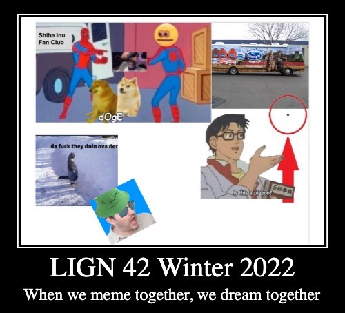

# Language Change ### Will Styler - LIGN 42 --- ### Today's Plan - What is language change? - What about language can change? - What causes language change? --- ## What is language change? --- ### Language change is just what it sounds like - "Time-based shifts in a language's features" - This can affect *any* element of the grammar or lexicon of language --- ### Language change is a *constant process* - It is largely unpreventable - 'A grammarian trying to stop language change is like a gardener trying to stop continental drift' - Some organizations ([lol](https://en.wikipedia.org/wiki/Acad%C3%A9mie_Fran%C3%A7aise) and [rofl](https://en.wikipedia.org/wiki/Royal_Spanish_Academy)) try - There is no moment when any language is not shifting - Only dead languages stop changing --- ### Change occurs gradually - Often starting in smaller communities and spreading to general populations - Today's sociolinguistic variation could be tomorrow's language change - Occasionally happens from the top down - New term for the Czech Republic just dropped --- ## What elements of language change? --- ### How have you noticed language change within your lifetime? --- ### How is your language different from the Boomers (born 1946-64)? --- ### Many linguistic elements change - Any element of grammar is a potential element of change - Some elements have more resistance to change - Writing systems are now conventionalized and uniformity is enforced (e.g. spellcheck, autocorrect) - Content words (nouns, verbs, adverbs, adjectives) change more than function words (prepositions, affixes, determiners, pronouns, conjunctions...) --- ### Sound Change (Phonetics and Phonology) - Shifts in speech sound pronunciation - Dude as [dud] vs. [du̟ːːːːd] - Addition or loss of individual sounds - Knight is no longer /knixt/ - Shifts in the rules governing sounds - [Afrikaans is now a tone language, but only for younger speakers](https://www.sciencedirect.com/science/article/pii/S0095447016300894) - **What sound changes have you seen?** --- ### Spelling Change - Changes to word spellings - Color vs. Colour, womyn, womxn, latinx, thi[cc](https://en.wiktionary.org/wiki/-cc) - Changes to usage of the writing system - The loss of two spaces after periods, capitalization/punctuation norms, use of emoji - Development of a new writing system - The [Arabic Chat Alphabet](https://en.wikipedia.org/wiki/Arabic_chat_alphabet) / Arabizi - **What spelling changes have you seen?** --- ### Syntactic and Other Grammatical Change - Changes to the syntactic structures of the language (e.g. 'Peas, I like' or 'Bought a car, he did!') - Gain or loss of major grammatical functions (e.g. cases, markings) - **Have you seen this?** --- ### Lexical Change - Addition of new words and morphemes - 'zoomer', 'covidiot', 'enshittification' - The loss or fading of words and morphemes - '-en', 'inflammable', 'vitriol', 'retarded' - **We've talked all about new words this quarter!** --- ### Semantic Shift - Word meanings becoming *broader* (e.g. 'socialist') - Word meanings becoming *narrower* (e.g. 'liberal') - Word meanings becoming *more negative* ('pejoration') (e.g. 'retarded' or 'handicapped') - Word meanings becoming *more positive* ('amelioration') (e.g. 'renegade') - Word meanings becoming *entirely different* (e.g. 'spam') - **What semantic shifts have you seen?** --- ### Any other kinds of change we didn't classify? --- ## What causes language change? --- ### Common Causes of language change - Change to the culture/world - COVID-related vocab - Economy and Ease - 'why waste time say lot word when few word do trick' - Semantic Shifts - Once 'retarded' became a negative term, we needed a new term which was more neutral - Language Contact - Languages in direct contact influence each other - **Which of these have you seen?** --- ### More causes - Social Changes and migrations - When the Russian nobility had to learn Russian during the Napoleonic wars... - Analogy and Reanalysis - 'Huh, Children... oxen... oven... nice ov!' - Change during learning - Complicated, unpredictable, or opaque language features may not be learned by kids - **Which of these have you seen?** --- ### Change is inevitable - Luckily, it's generally great! - Language often drifts towards learnability - It moves with changing cultures - ... and prepares us to talk about the future --- # The Class Meme --- ### One meme which encapsulates the LIGN 42 2024 Experience - See #the-class-meme on Discord - Take the last person's post and build on it - "I'm working on it now, thx" - Anything goes (within the content guidelines) --- ### Here's last year's ---  --- ### We'll think more about language change Wednesday! - ... and on Friday, we'll wrap up the quarter!